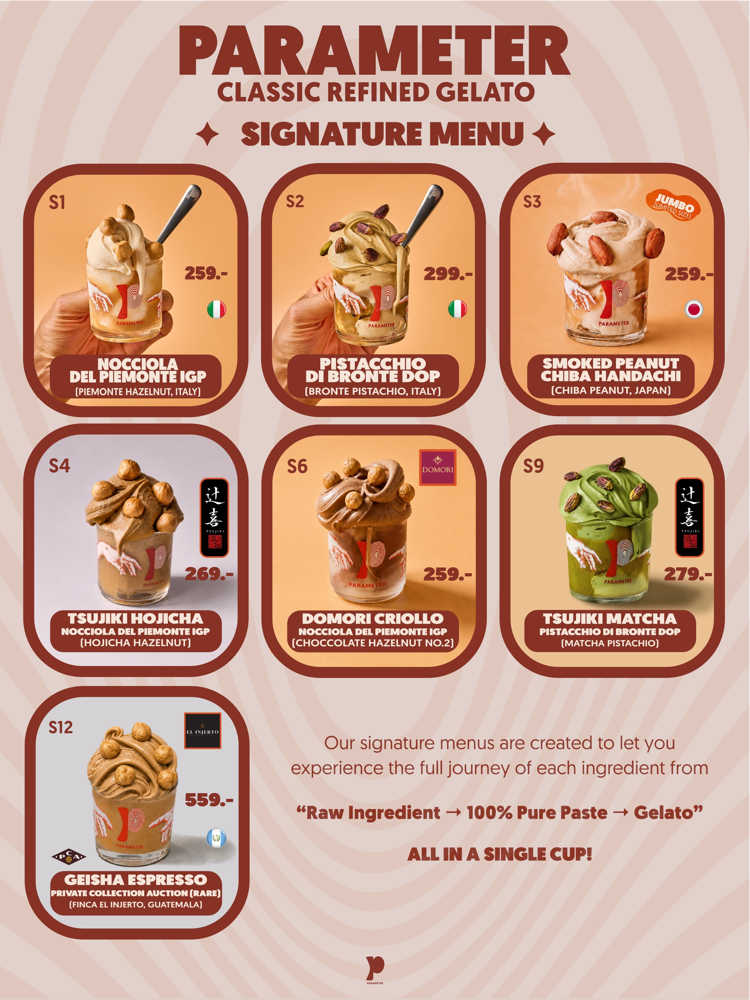
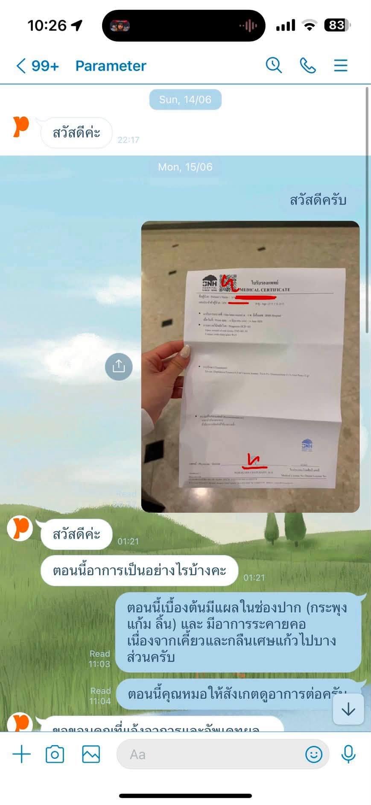

ข่าวที่น่าสนใจ
ขอขอบคุณ www.sanook.com

อัปเดต คนมีรถแบบนี้ ไม่ต้องยื่นอุทธรณ์บัตรสวัสดิการแห่งรัฐ 2569

เปิด 10 สายการบินดีที่สุดในโลกปี 2026 การบินไทยติดอันดับไหน? EVA Air คว้าแชมป์!

เลขเด็ดปฏิทินจีน ปฏิทินครอบครัวข่าว 3 งวด 1/8/69 แนวทางลุ้นโชครวยรับต้นเดือน

ไม่ได้ด้อยค่าร้านอื่น แต่เชื่อว่า "อร่อยที่สุดในโลก"
กฤษณ์ประกาศว่าเจลาโต้คลาสสิกบางรส (พิสตาชิโอ เฮเซลนัท ช็อกโกแลต กาแฟ) อยู่ในระดับ อันดับ 1 ของโลก แต่เป็น ความเห็นส่วนตัว จากการชิมร้านชั้นนำทั่วอิตาลีและยุโรป ยืนยัน ไม่ได้มีเจตนาดูถูกผู้ประกอบการรายอื่น เพราะร้านไม่ได้จัดหมวดหมู่ตัวเอง สุดท้ายลูกค้าจะเป็นผู้ตัดสิน อย่างไรก็ตาม บนโลกออนไลน์ก็ยังมีเสียงตั้งคำถามว่า หากไม่มีการประเมินจากหน่วยงานอิสระ คำว่า "ดีที่สุดในโลก" ก็ยังเป็นเพียงคำกล่าวของเจ้าของแบรนด์เอง ซึ่งทางกฤษณ์ ชี้แจงว่า เหตุผลที่ไม่ส่งประกวดเวทีนานาชาติ เพราะเวทีเหล่านั้นแข่งกันในรูปแบบ Modern Gelato ที่ใช้เครื่องจักร ต่างจาก Classic Gelato ของร้านที่เป็นงานคราฟต์
เป็นแค่เชฟ ที่ไม่มีชื่อในบัญชีผู้ถือหุ้น
อีกประเด็นที่ทางสื่ออย่าง The Standard และ กรุงเทพธุรกิจ ได้ถามก็คือ โครงสร้างบริษัท เนื่องจาก ข้อมูลจากกรมพัฒนาธุรกิจการค้า ณ วันที่ 19 กรกฎาคม 2569 ระบุว่า บริษัท พารามิเตอร์ จำกัด จดทะเบียนเมื่อ 3 มีนาคม 2568 มีกรรมการเพียงคนเดียวคือ พรพิพัฒน์ เวหัพพลา ไม่ปรากฏชื่อกฤษณ์ในผู้ถือหุ้น ทั้งที่เป็นผู้ออกหน้าตลอดเวลาจนเหมือนเป็น เจ้าของ กฤษณ์ชี้แจงว่า PARAMETER มีหุ้นส่วนหลายราย แต่บทบาทหลักของเขาคือ เชฟ ผู้ดูแลการพัฒนาและผลิตเจลาโต้ ไม่ได้บริหารทุกส่วนของบริษัท ส่วนการขยายสาขา เขายอมรับว่ายังทำได้ยากเพราะกระบวนการผลิตซับซ้อนและภาระงานสูง

พร้อมเจ๊ง ให้คุณภาพและลูกค้าเป็นผู้ตัดสิน
กฤษณ์ มองว่า ธุรกิจร้านอาหารและขนมมีอัตราปิดกิจการสูงอยู่แล้ว โดยระบุว่าร้านอาจล้มเหลวถึง 70-80% ซึ่งเป็นความเสี่ยงที่รับรู้ก่อนเข้าสู่ตลาด หากเจลาโต้ไม่อร่อยหรือคุณภาพไม่ดีจริง ร้านก็จะอยู่ไม่ได้ด้วยตัวเอง ไม่จำเป็นต้องอาศัยเสียงวิจารณ์ในโลกออนไลน์มาตัดสิน ตรงกันข้าม หากสินค้ามีคุณภาพและลูกค้ากลับมาซื้อซ้ำ ร้านก็มีโอกาสอยู่รอด แม้จะถูกทัวร์ลงหรือมีคนไม่ชอบเจ้าของแบรนด์ก็ตาม ดังนั้น ไม่ได้กังวลว่ากระแสวิจารณ์จะทำให้ธุรกิจล้มเหลว และพร้อมยอมรับผลลัพธ์หากร้านจะ เจ๊ง ทั้งนี้ กฤษณ์ระบุว่า ลูกค้าหลักของร้านมีอยู่ 2 กลุ่ม ได้แก่ ลูกค้าที่กลับมาซื้อซ้ำ ซึ่งหลายครั้งเป็นเด็กที่พาพ่อแม่มาด้วย และลูกค้าชาวต่างชาติ เขาจึงเชื่อว่า ความสำเร็จในระยะยาวจะถูกตัดสินจากรสชาติ คุณภาพ และการซื้อซ้ำ มากกว่าความคิดเห็นบนโซเชียล โดยเร็ว ๆ นี้ กฤษณ์ เผยว่า ทางร้านจะมี เมนูใหม่ราคา 700++ เมื่อถูกตั้งคำถามว่านี่เป็นกลยุทธ์ปั่นดราม่าหรือไม่ กฤษณ์ยืนยันว่าไม่ได้วางแผนหรือสร้างขึ้นเพื่อการตลาด แต่เป็นผลจากการต้องการปกป้องจุดยืนของสิ่งที่ทุ่มเทสร้างขึ้น
เศษแก้วบาดปาก ดราม่าใหม่ที่รอชี้แจง
หลังจากที่ กฤษณ์ แถลงชี้แจงประเด็นดราม่า ในช่วงเวลาประมาณ 21.00 น. ลูกค้ารายหนึ่งโพสต์เล่าประสบการณ์ไปทานเจลาโต้ของร้าน PARAMETER เมื่อประมาณ 1 เดือนก่อนว่า ระหว่างกินรู้สึกว่ามีอะไรแข็งผิดปกติในปาก เมื่อคายออกมาพบเป็นเศษแก้วขนาดเท่าเม็ดถั่ว ซึ่งเศษแก้วดังกล่าวได้สร้างแผลเล็กที่ลิ้นและกระพุ้งแก้ม โดยทางร้านได้แจ้งว่า จะรับผิดชอบค่ารักษาพยาบาลและคืนเงินค่าเจลาโต้เป็นเงินสด ซึ่งทางร้านนำแก้ว Gelato และเศษแก้วกลับไปตรวจสอบ ทำให้ลูกค้าไม่ทันได้ถ่ายรูปเก็บหลักฐานไว้ อย่างไรก็ตาม เมื่อเจ้าของโพสต์ได้ส่งใบรับรองแพทย์และใบเสร็จค่ารักษาให้ทางร้าน พร้อมสอบถามถึงแนวทางการรับผิดชอบ ซึ่งทางร้านแจ้งว่าจะรับผิดชอบเฉพาะ ค่าใช้จ่ายส่วนของค่ารักษาพยาบาล เท่านั้น อย่างไรก็ตาม เจ้าของโพสต์ระบุว่า ไม่ได้ต้องการเรียกร้องค่าเสียหายเพิ่มเติม แต่รู้สึก ผิดหวัง ที่ไม่มีการติดต่อขอโทษโดยตรงจากเจ้าของร้านหรือผู้มีอำนาจตัดสินใจ มีแต่การสื่อสารผ่านข้อความเท่านั้น ไม่มีคำอธิบายว่าสาเหตุเกิดจากอะไร และไม่มีมาตรการป้องกันไม่ให้เกิดซ้ำ นอกจากนี้ยังมองว่า ในฐานะแบรนด์ที่วางตำแหน่งเป็นพรีเมียมและราคาสูง ควรมีมาตรฐานความปลอดภัยและการดูแลลูกค้าที่สูงกว่านี้

ก็คงต้องรอดูว่าอนาคตของ PARAMETER จะเป็นอย่างไร เพราะดราม่าครั้งนี้สร้างผลสองด้าน — ด้านหนึ่งแบรนด์ถูกวิจารณ์หนัก แต่อีกด้านก็ได้ Earned Media มูลค่ามหาศาลโดยไม่ต้องซื้อโฆษณา และอาจพาคนมาต่อคิวหน้าร้านได้ในระยะสั้น แต่สิ่งที่จะตัดสินอนาคตของ PARAMETER จริง ๆ ไม่ใช่กระแสบนโซเชียล เพราะเมื่อความอยากรู้อยากลองจางลง ลูกค้าจะยังรู้สึกว่าคุ้มค่าพอจะกลับมาจ่ายอีกครั้งหรือไม่ เพราะสุดท้ายแล้ว หากสินค้าไม่ดีจริง ร้านก็จะอยู่ไม่ได้ด้วยตัวเอง